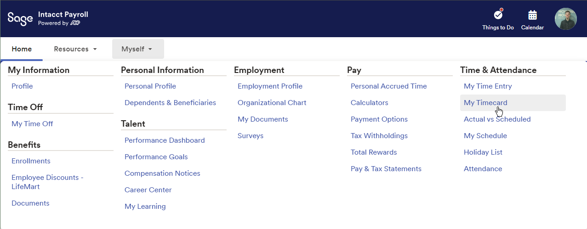
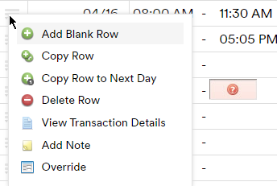
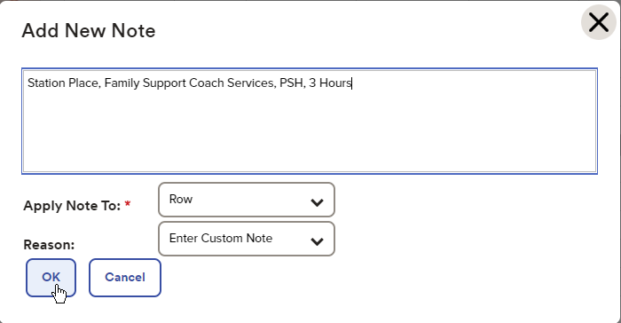

ADP Note Updating Process Flowchart
Start
Begin the process when you have time to update your notes.
↓
Record residents you've worked with and the duration. For each interaction, note:
- Property
- Activity
- Program Type
- Number of Hours
Click here for a list of the program enrollment for all of your residents. Click export to download an Excel Spreadsheet.
↓
Access Timecard
Log in to ADP and navigate to Myself → My Timecard.
↓
Edit Timecard
Click on the three lines beside a completed row to bring up options.
↓
Add Note/Comment
Select Add Note on desktop or Add Comment on mobile.
↓
Enter Data
For each unique program, even if residents are at the same property, create a separate line item:
- Station Place / Family Support Coach Services / CoC / 4 hours
- Station Place / Family Support Coach Services / PSH / 4 hours
Note: If program names and property names are the same, use the property name for the program name.
↓
Review and Confirm
Review the list for accuracy and confirm that all programs and interactions are properly noted.
↓
Complete
Finish the update process and log out or close the application.
Home